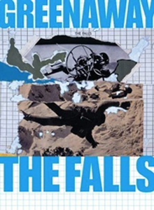
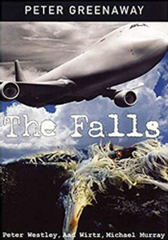
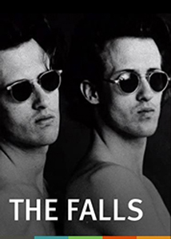
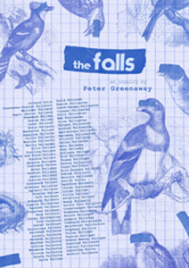
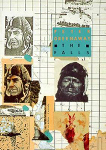
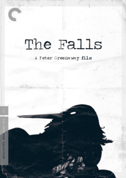

The Falls is a 1980 film directed by Peter Greenaway. It was Greenaway's first feature-length film after many years making shorts. It does not have a traditional dramatic narrative; it takes the form of a mock documentary in 92 short parts.
The soundtrack is mainly by Michael Nyman and is partly based, like his later music for Drowning by Numbers, on the slow movement of Mozart's Sinfonia Concertante for Violin, Viola and Orchestra K. 364. It also includes numerous clips from various songs popular among the avant-garde of the time, including pieces by Brian Eno (in particular "Golden Hours" from Another Green World) and snippets of "Jugband Blues", the last song Syd Barrett recorded with Pink Floyd.
ppis Fallabus
Narrator



The world has been struck by a mysterious incident called the "Violent Unknown Event" or VUE, which has killed many people and left a great many survivors suffering from a common set of symptoms: mysterious ailments (some appearing to be mutations of evolving into a bird-like form), dreaming of water and becoming obsessed with birds and flight. Many of the survivors have been gifted with new languages. They have also stopped aging, making them immortal.
A directory of these survivors has been compiled, and The Falls is presented as a film version of an excerpt from that directory, corresponding to the 92 entries for persons whose surnames begin with the letters FALL-. Not all of the 92 entries correspond to a person – some correspond to deleted entries, cross references and other oddities of the administrative process that has produced the directory. One biography concerns two people – the twin brothers Ipson and Pulat Fallari, who are played (in still photographs) by the Brothers Quay. In addition to the common VUE symptoms mentioned above, a number of themes run through the film. Among these are references to a number of bureaucratic organisations including the VUE Commission and the Bird Facilities Industries (a parody of the British Film Institute, which produced the film), the history of manned flight from Daedalus with the suggestion that birds may be responsible for the VUE (and that the film may thus be seen as a sequel to Hitchcock's The Birds), complex debates over the location of the epicentre of the VUE, and repeated references to Tulse Luper. Luper is a recurring off-stage character in Greenaway's early films, and would eventually appear on film in the epic series The Tulse Luper Suitcases (2003 onwards), which is itself named in The Falls. The largely formal and deadpan manner of the narration contrasts with the absurdity of the content.


